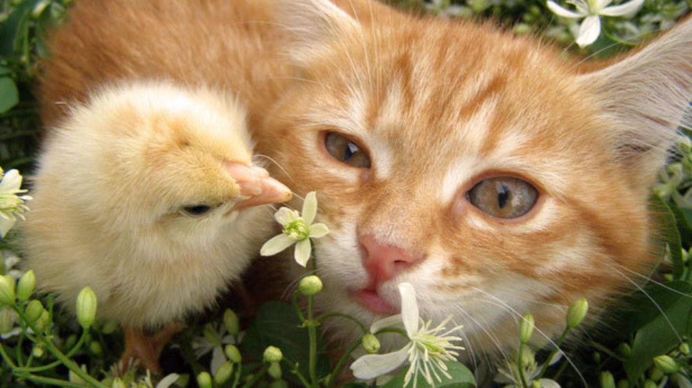

Grooming chó mất bao lâu? Những yếu tố quyết định thời gian
Trả lời nhanh: không nên áp một con số thời gian cố định cho mọi bé. Một buổi grooming có thể nhanh hoặc lâu hơn tùy gói dịch vụ, kích thước, bộ lông, mức rối, kiểu cắt và khả năng hợp tác. Nếu cần sắp xếp giờ đón chính xác hơn, hãy gửi giống, cân nặng, ảnh lông hiện tại và gói muốn làm khi đặt lịch để Lumi Pet đánh giá tình huống cụ thể thay vì hứa một thời lượng không phù hợp.

Có một thời gian chuẩn cho mọi buổi grooming không?
Không. “Grooming” có thể chỉ một chuỗi chăm sóc cơ bản hoặc bao gồm tắm, sấy, vệ sinh, xử lý lông rối, cạo/cắt tỉa và tạo kiểu. Hai bé cùng cân nặng vẫn có thể cần thời gian rất khác nhau nếu tình trạng lông và mức hợp tác khác nhau.
Vì vậy, nếu mục tiêu của bạn là biết giờ nào có thể đón bé, thông tin hữu ích nhất không phải chỉ là “chó nặng bao nhiêu kg” mà còn là lông hiện tại thế nào và muốn làm gói gì.
6 yếu tố khiến thời gian grooming chó khác nhau
1. Gói dịch vụ
Tắm vệ sinh và một buổi có thêm cạo hoặc cắt tỉa là hai khối lượng công việc khác nhau. Tạo kiểu theo ảnh tham khảo thường cần nhiều bước kiểm tra form hơn so với chăm sóc cơ bản.
2. Kích thước và diện tích bộ lông
Chó lớn thường có nhiều diện tích lông cần làm sạch, sấy và chải hơn. Tuy nhiên cân nặng không phải yếu tố duy nhất; một bé nhỏ nhưng lông rất dày hoặc rối vẫn có thể cần nhiều thao tác.
3. Kiểu lông và độ dày
Lông ngắn, lông dài, lông xoăn và lông kép phản ứng khác nhau khi làm ướt, sấy và chải. Bộ lông giữ nước lâu hoặc cần chải kỹ sẽ làm quy trình kéo dài hơn.
4. Mức rối lông
Lông rối không nên được xử lý bằng cách kéo mạnh để “làm nhanh”. Khi rối đáng kể, groomer cần đánh giá nên gỡ phần nào, cắt phần nào và lựa chọn phương án ít gây khó chịu hơn. Bạn có thể xem thêm gỡ rối lông chó trước khi chọn gói.
5. Kiểu cắt mong muốn
Cắt gọn để dễ chăm sóc tại nhà khác với tạo form chi tiết. Nếu có kiểu mong muốn, gửi ảnh tham khảo ngay khi đặt lịch giúp hai bên thống nhất kỳ vọng sớm hơn.
6. Khả năng hợp tác của chó
Một bé bình tĩnh khi chạm chân, sấy và chải có thể đi qua từng bước thuận lợi hơn. Với chó lo lắng hoặc sợ một thao tác cụ thể, ưu tiên an toàn và giảm stress quan trọng hơn việc chạy theo thời gian. Nếu bé sợ dụng cụ, xem thêm bài chó sợ cắt móng khi grooming.
Những công đoạn nào có thể làm buổi grooming lâu hơn?
Một buổi chăm sóc có thể gồm kiểm tra tình trạng lông, tắm, làm sạch, sấy khô, chải, vệ sinh các vùng cần thiết và cắt/cạo/tạo kiểu tùy gói. Thời gian phát sinh thường đến từ những công đoạn không thể đánh giá chỉ qua cân nặng: lông giữ ẩm lâu, rối sát da, cần chỉnh form nhiều lần hoặc bé cần nghỉ giữa các bước.
Chuẩn bị gì để buổi grooming thuận lợi hơn?
Gửi ảnh hiện trạng trước
Ảnh toàn thân và vùng lông đang rối giúp cơ sở grooming hiểu tình trạng trước khi bé tới. Nếu muốn tạo kiểu, gửi thêm ảnh mẫu.
Nói rõ lịch sử hành vi
Nếu chó từng sợ máy sấy, không thích chạm chân, dễ vùng khi cắt móng hoặc có thao tác nào đặc biệt khó, hãy báo trước. Thông tin này giúp chuẩn bị cách tiếp cận phù hợp.
Chọn đúng gói ngay từ đầu
Nếu chưa biết nên tắm vệ sinh, tắm + cạo hay tắm + cắt tỉa, xem grooming chó gồm những gì và bảng giá Spa thú cưng. Khi nhu cầu rõ hơn, việc ước lượng quy trình cũng thực tế hơn.
Cách hỏi thời gian khi đặt lịch để nhận câu trả lời sát hơn
Thay vì chỉ hỏi “grooming mất bao lâu?”, bạn có thể gửi một lần các thông tin: giống chó, cân nặng, ảnh hiện trạng, mức rối, gói muốn làm, kiểu cắt mong muốn và lưu ý hành vi. Lumi Pet có thể dựa trên tình huống cụ thể để trao đổi lịch nhận/đón phù hợp hơn.
Nếu bạn cần grooming tại Bình Thạnh, xem dịch vụ Grooming chó mèo Bình Thạnh hoặc vào Đặt lịch để gửi thông tin của bé.
Câu hỏi thường gặp
Grooming chó mất bao lâu?
Không có một thời lượng cố định cho mọi chó. Gói dịch vụ, kích thước, loại lông, mức rối, kiểu cắt và khả năng hợp tác đều có thể làm thời gian thay đổi.
Hai chó cùng cân nặng có grooming lâu như nhau không?
Không nhất thiết. Một bé lông ngắn ít rối và một bé lông dài dày, cần tạo kiểu có khối lượng thao tác khác nhau dù cân nặng giống nhau.
Có nên yêu cầu làm thật nhanh vì chó hay lo?
Nên báo rõ việc bé hay lo để groomer đánh giá cách xử lý. Ép mọi công đoạn vào một mốc thời gian cứng có thể không phù hợp; ưu tiên an toàn và mức chịu đựng của từng bé.
Cần ước lượng lịch grooming cho bé?
Gửi giống, cân nặng, ảnh lông hiện tại và gói bạn muốn làm. Lumi Pet sẽ trao đổi theo tình trạng thực tế thay vì đưa một mốc thời gian chung cho mọi bé.